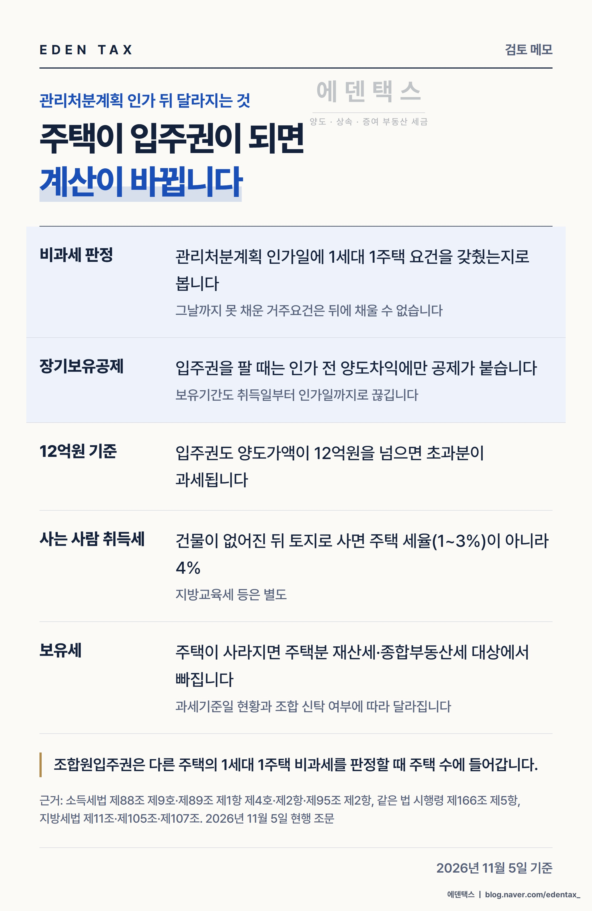
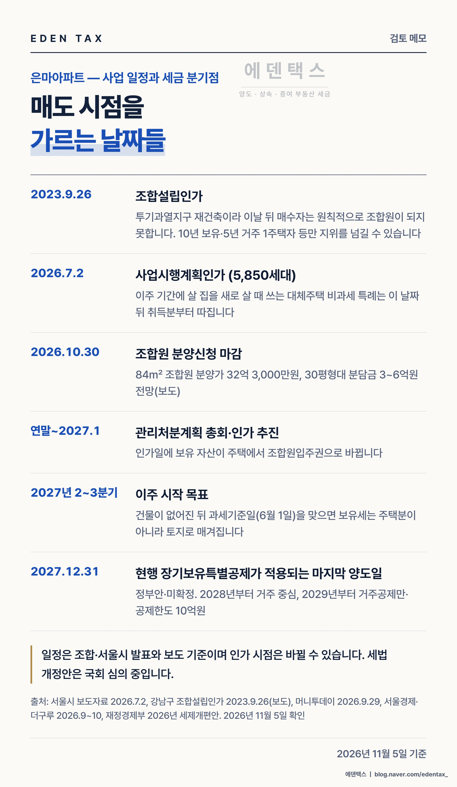

대치동 은마아파트에서 직전 거래보다 낮은 값의 매물이 이어지고 있습니다. 2026년 7월 사업시행계획인가를 받고 조합원 분양신청까지 마친 단지인데도 그렇습니다. 매도인 쪽에는 관리처분계획 인가일과 장기보유특별공제 개편 시점이 기다리고 있고, 매수인 쪽은 청약 일정과 대출 한도에 묶여 있습니다. 아래에서는 이 날짜들을 순서대로 놓고 정리했습니다. (2026년 11월 5일 기준)
보도된 가격 변화
| 전용면적 | 이전 | 최근 | 차이 |
|---|---|---|---|
| 76.79㎡ 9층 | 34억 8,000만원(6.12 거래) | 31억 2,000만원(10.2 거래) | 3억 6,000만원 |
| 76.79㎡ 저층 | 30억 5,000만원(9.28 1층 거래) | 29억 9,000만원(11.2 등록 호가) | 6,000만원 |
| 84㎡ 중위가격 | 42억원(1분기) | 34억 1,000만원(10월) | 7억 9,000만원 |
첫 줄은 실거래끼리 비교한 숫자입니다. 둘째 줄은 실거래와 등록 호가를 비교했고, 셋째 줄은 기사 한 곳의 집계입니다.
거래가 끊긴 것은 아닙니다. 매매 신고는 1월 1건, 2월 2건에서 8월 6건, 9월 12건으로 늘었습니다. 매물은 연초의 두 배 수준인 약 50건으로 집계됐습니다.
지금 은마를 팔 수 있는 사람
강남구는 투기과열지구입니다. 투기과열지구 재건축에서는 조합설립인가 뒤에 집을 산 사람이 조합원이 되지 못합니다(도시 및 주거환경정비법 제39조 제2항). 은마의 조합설립인가일은 2023년 9월 26일입니다. 그 뒤에 산 사람은 매매는 할 수 있어도 새 아파트 대신 현금청산을 받습니다.
매수인이 조합원 지위를 이어받으려면 매도인이 1세대 1주택자로서 10년 이상 소유하고 5년 이상 거주했어야 합니다(같은 법 시행령 제37조 제1항). 거주기간은 주민등록표로 따지고 배우자나 직계존비속이 산 기간도 합칩니다. 근무·질병·취학·결혼으로 세대원 전원이 다른 시·도로 옮긴 경우와 해외 이주도 예외로 인정됩니다.
조합설립 뒤 3년 넘게 사업시행인가 신청이 없을 때 쓰는 예외(같은 조 제3항 제1호)는 은마에 해당하지 않습니다. 3년이 차는 2026년 9월 26일보다 앞선 7월 2일에 사업시행계획인가가 났기 때문입니다.
관리처분계획 인가일 전후로 달라지는 계산
조합은 10월 30일 조합원 분양신청을 마감했고, 연말에서 내년 1월 사이 관리처분계획 총회를 열 계획입니다. 보도된 조합원 분양가는 84㎡ 32억 3,000만원이고, 30평형대 소유자의 추가 부담은 3억~6억원으로 전망됐습니다.

| 항목 | 인가 전(주택) | 인가 후(조합원입주권) |
|---|---|---|
| 비과세 거주요건 | 2년 거주를 채워 가는 중 | 인가일까지 채운 것만 인정 |
| 장기보유특별공제 보유기간 | 계속 늘어남 | 인가일에서 멈춤 |
| 공제가 붙는 양도차익 | 전체 | 인가 전 양도차익만 |
| 매수인 취득세 | 주택 1~3% | 건물 멸실 뒤 토지로 사면 4% |
근거는 소득세법 제89조 제1항 제4호, 제95조 제2항, 같은 법 시행령 제166조 제5항 제1호, 지방세법 제11조 제1항 제7호 나목입니다.
취득 당시 조정대상지역이던 주택은 2년을 살아야 비과세가 됩니다. 전세만 주고 살지 않은 소유자라면 인가일을 넘긴 뒤에는 거주요건을 채울 길이 없습니다(준공 후 거주 전 양도를 가정한 경우). 조합원에게서 산 입주권은 처음부터 장기보유특별공제를 받지 못합니다.
보유세는 6월 1일 현황으로 매기므로, 그날 건물이 멸실돼 있으면 주택분이 아니라 토지로 과세됩니다. 조합은 내년 2분기 말에서 3분기 초 이주를 시작할 계획입니다. 신탁 여부와 멸실 시점에 따라 결과가 달라져 개별 확인이 필요합니다.
2027년 12월 31일 뒤의 장기보유특별공제 (정부안·미확정)
2026년 8월 3일 발표되고 9월 1일 국무회의에서 확정된 세제개편안은 11월 5일 현재 국회 심의 중입니다. 아래 표는 정부안이며 확정되지 않았습니다.
| 양도 시기 | 보유 공제율 | 거주 공제율 | 공제 한도 |
|---|---|---|---|
| 2027년 12월 31일까지 | 연 4%, 최대 40% | 연 4%, 최대 40% | 없음 |
| 2028년 | 연 2%, 최대 20% | 연 6%, 최대 60% | 20억원 |
| 2029년 이후 | 없음 | 연 8%, 최대 80% | 10억원 |
오래 보유했지만 거주 기간이 짧은 소유자일수록 2028년부터 공제가 크게 줄어듭니다. 10년 이상 거주한 1주택의 기본공제를 2,500만원으로 늘리는 안도 들어 있습니다. 다만 양도가액 30억원 이하 조건이 붙어 지금 은마 84㎡ 가격대에는 해당하지 않습니다.
종합부동산세도 정부안에서 거주 여부로 나뉩니다. 1세대 1주택 기본공제는 거주 14억원, 비거주 12억원입니다. 보유기간 세액공제는 2028년부터 거주기간 공제로 바뀌고, 공정시장가액비율은 60%에서 70%로 오릅니다.

매수 쪽이 움직이지 않는 이유
디에이치 반포124는 11월 27일 입주자모집공고, 12월 7일 특별공급, 12월 8일 일반 1순위 청약이 예정돼 있습니다(보도 기준). 일반분양은 1,801가구로 안내됐고, 84㎡ 분양가는 30억원 안팎으로 예상되지만 확정되지 않았습니다.
청약을 노리는 세대가 먼저 집을 사면 불리해집니다. 1주택 세대는 가점제에서 빠지고, 추첨 물량도 75%가 무주택 세대에 먼저 배정됩니다. 주택과 분양권을 함께 가진 상태에서 기존 주택을 팔면 1세대 1주택 비과세도 배제됩니다(소득세법 제89조 제2항).
현금 요건도 겹칩니다.
- 시가 25억원 초과 주택의 주택담보대출 한도는 2억원입니다(2025년 10·15 대책).
- 서울 아파트는 2025년 10월 20일부터 토지거래허가 대상이라 매수인이 2년을 직접 살아야 합니다.
- 세입자가 있는 집의 실거주 유예는 2026년 5월 12일부터 계속 무주택인 사람에게만 열려 있습니다.
이주 전에 살 집을 마련한다면
1주택자가 재건축 기간에 살 집을 따로 샀다면 대체주택 비과세 특례를 볼 수 있습니다(소득세법 시행령 제156조의2 제5항). 요건은 세 가지입니다.
- 사업시행계획인가일 이후 취득해 1년 이상 거주할 것. 은마는 2026년 7월 2일 이후 취득분입니다.
- 신축 완성 뒤 3년 안에 세대 전원이 이사해 1년 이상 살 것.
- 완성 전이나 완성 뒤 3년 안에 대체주택을 팔 것.
하나라도 어기면 특례 전체가 적용되지 않습니다. 대체주택 계약 전에 조합 일정과 맞춘 일정표부터 만들어 두시기 바랍니다.
매도 결정 전에 적어 볼 날짜
재건축 단지를 상담할 때 가장 아깝다고 느끼는 경우는 세금이 많이 나온 경우가 아니라, 날짜 하나를 몰라서 선택지가 사라진 경우입니다. 거주요건은 관리처분계획 인가일까지만 채울 수 있고, 지위 양도 요건은 하루라도 모자라면 인정되지 않습니다. 팔지 말지 정하기 전에 내 집의 취득일·거주기간·조합 일정부터 종이에 적어 보시기를 권합니다.
— 정재욱 세무사
에덴택스는 국세청 출신 세무사가 양도·상속·증여·취득까지 부동산 세금을 직접 봅니다. 등기부등본, 주민등록초본, 조합 안내문을 가지고 오시면 양도 시기별 세액과 조합원 지위 양도 가능 여부부터 정리해 드립니다.
※ 2026년 11월 5일 기준입니다. 호가와 중위가격은 언론 보도·공개 집계 기준이어서 실거래가와 다를 수 있고, 조합 일정과 분양가·분담금은 확정 전 자료입니다. 세법 개정안은 국회 심의 중인 정부안이며 최종 내용이 달라질 수 있습니다. 법령은 2026년 11월 5일 현행 조문 기준이고, 개별 적용 여부는 소유자별 사정에 따라 달라집니다.
※ 본 글은 세무·부동산 분석을 위한 참고자료로, 개별 세무상담이나 신고 검토를 대체하지 않으며 투자·청약을 권유하지 않습니다. 세금 신고 및 투자 결정 전 전문가의 검토를 받으시기 바라며, 이를 활용한 판단과 결과의 책임은 이용자에게 있습니다.